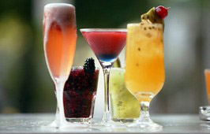
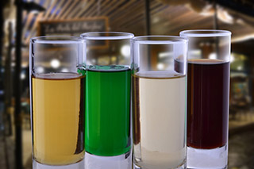

Menú
- Para beber
 Aperitivos
- Mango Sour
- Pisco Sour
- Ameretto Sour
- Whisky Sour
- Jerez Sour
- Vaina
- Martini Seco
- Pichuncho
- Bitter Batido
Tragos
- Whisky Johnny Walker Etiqueta Roja
- Whisky Johnny Walker Etiqueta Negro
- Whisky Chivas Regal
- Gin con Gin
- Vodka Naranja
- Vodka Tonic
- Campari
- Tom Collins
- Habana Club
- Clavo Oxidado
Ron
- Flor de caña etiqueta negra 5 años
Vodka
- Stolichnaya
Piscos
- Mistral 35º
- Mistral 45º
- Alto del Carmen
Cervezas
- Austral
- Kunstmann
- Corona
- Escudo
- Cristal
- Royal
- Tiger bot Singapóur
Jugos Naturales
Jugo Huesillo
Bebidas
Bajativos
- Menta Frapé
- Manzanilla
- Pisco Manzanilla
- Araucano
- Amarento Galiano
- Bailey`s
De la temporada
- Jarro de borgoña
- Especiales
- Entradas
- Carnes
- Aves
- Ensaladas
- Acompañamientos
- Vinos
- Postres